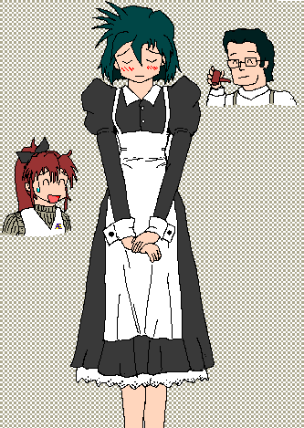
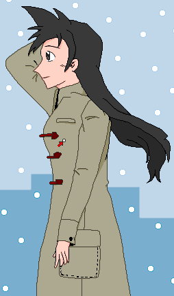

オレの名前は秋野薫。世間ではオレの事を高校生名探偵なんて呼んで英雄扱いだ。ところが、その高名振りが犯人の身内の恨みを買うことになってしまい、オレは突然の刺客によって瀕死の重症を負ってしまった。その場に居合わせたマスターと乃恵美の処置によって、オレは一命を取りとめたものの、投与された薬の影響で……
「オレは……オンナになってしまったわけか……」
マスターの計らいでこれからは「秋野香織」という女子高生として暮らすことになったオレだが、今後二度と周りの人間を巻き込まないためにも「秋野薫」は死んだ、ということに決めた。そして秋野香織としての登校日初日、同時にオレの、秋野薫の追悼集会が開かれたのだった。その帰り道、幼なじみのマキは橋の下で号泣していた。薫は逝ってしまった、もう、２度と会えない、そんな悲愴な想いをそのままに……。そんなマキに、オレは何の言葉も掛けてやれない……。
Gentlegirl
作：ＴＲＡＣＥ
２．戦慄の腕時計
すっかり日が沈んで、地平線がほんのりと紅くなっている。夜空は雲ひとつ無く一番星がきらり。いわゆるトワイライトと呼ばれる時間帯だ。放射冷却で明日の朝は冷え込むだろう。 
香織は一人帰路に着いていた。とは言っても、帰るのは自宅ではない。彼女は薫ではなく香織だから自宅に帰れる訳がないのだ。姉の美紀も香織の正体が死んだはずの弟だとは知らないし、話したところで信じてもらえるはずがない。だから、マスターの家に居候する事になっていた。
うつむいて歩いたまま、香織はふと思う。
そういえばマキの身体、大きかったな……いや、オレが小さくなったのか……。
今の自分は女だ。寄り添ってきた真貴子にも、胸板で迎える事は出来ない。胸板の代わりにあるのは、胸にくっついたふたつのふくらみだ。自分の気持ちが、それで真貴子に伝わったのか……香織にはわからなかった。
見えてきた喫茶ワトソンの店内から明るい笑い声が漏れている。だが香織は明るい気になんてなれない。ここで明るく振る舞っていたら真貴子に失礼だとも思う。
だが、その笑い声がどこかで聞き覚えがあるものだと気付く。
コレは姉キの声じゃねーか……。
「だはははははは！だーッはっはっはっはっはっ……」
な、何だ？姉キの様子がおかしいぞ。なんか変なモンでも食ったのか？
弟の死を現実にして、気でも狂ったのだろうか。聞こえてくる姉・美紀の笑い声は明らかに下品なものだった。
とりあえず香織は店の入り口から入った。
「どうも、マスター」
その途端、店内から得体の知れない殺気を感じ取った。銃口の殺気。以前撃たれた時も感じた殺気だ。しかし相手は……
実は自分の目の前にいた。他でもない、美紀である。
その美紀が持っていた８９式小銃が火を吹いた。
「へっ！？」
足元に襲いかかる５・５６ミリの弾丸の嵐。しかも、実弾である。
「ひええっ！？」
逃げても逃げても銃弾のスコールが香織の足元をかき回す。おかげで香織は店の入り口で、足元の銃撃を避けるためにコサックダンスのごときダンスを踊らされる羽目になった。
ようやく銃声が止まった。弾切れとなったのだ。
「な……ななな……なにすん……の、よッ！」
奇妙なイントネーションだった。慣れない女言葉を話すのは難しいし、恥ずかしい。
見透かしたように、美紀が腹を抱えてまた下品にゲラゲラ笑いはじめた。
「だーっはっははははは！ほえ、ほえ、ほえーっへっへっへっへっへっへっ……」
いくらなんでもそれは笑い過ぎだと思うのだが……。
「ねぇマスター。どうしちゃったの、このヒト？」
さっきからバカ笑いしているし、いきなり小銃は撃ってくるし、薬でも飲んで幻覚でも見ているのだろうか。
マスターがそれに答えようとしたが、美紀本人がさえぎった。
「なーにが『何すんのよ』だ！それでおめーさんは女になりきってるつもりかい？だははは、この推理バカがぁ！！」
この台詞が何を指しているのか、推して知るべしである。
「マスター！？まさかアンタ……アナタ、姉キ……美紀さんに、ワタシのコト、話したのか……話したのねっ！？」
「……無理するな。普通にしゃべれ、普通に」
「じゃあ、やっぱり……」
マスターも美紀もウンウンとうなずく。
「なんでだよ！？なんで姉キにはオレの正体話しちまったんだよ！？」
カウンターに登ってマスターに言い寄る香織、いや、「薫」だろう。
「あ……まぁ、せめてもう一人ぐらい協力者がほしいからさ……」
そう言い訳するマスターだが、視線は香織の顔を見ていない。カウンターに叩き付けた両腕の間、ちょうど挟まれる形となっていた香織の胸元が気になっていたのだ。
それに気付いた香織の顔はみるみる赤くなっていった。怒っているのか、恥ずかしがっているのか―――いや、その両方だろう。
「み、見るなぁ、マスターのスケベ親父ぃ……」
しかし……改めてよくよく眺めてみても、とても不思議な気分にかられていた。Ｙシャツの下の胸のふくらみが自分のモノとはとても思えないのだ。そういえば昨夜も気になって、病室のベッドの中でしきりに自分の身体を触っていたことも思い出す。今だって、自分の身体を見ているだけなのに妙にどぎまぎして落ち着かない。思春期の少女は自分の胸が同年代の友達より大きいことに真剣に悩む事が多いと聞いた事があるが、その気持ちがわかるような気がする香織であった（い、いや、それはビミョーに違うと思うぞ）。
美紀はまだ腹を抱えながら、カウンターに寄ってきた。
「だははは、ホント、馬鹿みたいだよ。初めっから知ってりゃ学校であんなにしおらしくなんか振る舞わなかったのにさ。あー、損した」
「ふーん、ご愁傷様」
相手が実の姉ならあっさり皮肉を言う香織である。
「で？マスターと二人で、何を企んでるんだ？」
マスターの「協力者」という台詞が気になっていたのだ。そんな些細な一言も聞き逃さないあたりはさすが「元」高校生探偵・秋野薫だけの事はある。
「まぁ、何のコトを言っているのかアタクシには身に覚えがありませんわぁ」
美紀は思いっきりとぼけた。
「気持ち悪ィ喋り方すんじゃねーよ。白状しねーと、そのペチャパイもっと潰すぞ！」
「よく言うよ、この巨乳娘がぁ！！」
「……へっ！？」
売り言葉に買い言葉。「巨乳」の言葉にドキッとする香織。
た……たしかに今のオレは姉キより胸がでかい……。
横に立つ美紀の胸と自分の胸を見比べた結論である。
いや、待てよ。たしか乃恵美の胸は……。
どうやら、比較対象が間違っていただけのようだ。横に立つ姉の胸が小さすぎる、ただそれだけの話だった。それがわかれは、恥ずかしくも何ともない。
「やっぱ姉キがペチャパイなだけじゃんか」
「……」
本人も気にしている事である。美紀はちょっといじけた。
「……話せばいいんでしょ、話せば」
ちょうどその時、乃恵美も店の勝手口から入ってきた。
「薫くんの部屋の荷物入れ、終わったよ、パパ」
「おおちょうどいい。これで全員揃ったか」
さらにちょうどいいことに、ゆでていたパスタと煮込んでいたミートソースも上がった。喫茶ワトソンの定番メニュー、スパゲティーナポリタンの完成だ。マスターが夕食替わりに人数分、つまり四人前を調理していたのだ。
さらに盛り付けてカウンターに置いた後、乃恵美もカウンター席に腰掛けた。
ひとまず落ち着いたところで、マスターが話を切り出した。
「では説明しよう。薫への特訓プログラムを」
「……ぷろぐらむ？」
香織は口の中に物を入れたまま、フォークを握っている手を止めた。
パスタをすする美紀がマスターの話に続いた。
「その通り、特訓だ。おめーさんを一人前の“女”にするためのな！」
「……は？」
「薫、おめーさんは確かに女の身体となった。だがな、思考は男のまんまだし、何せスカートだって履けないぐらいなんだから、意識してなければ言動だって男のものになってしまうだろう。そ・こ・で！アタシと乃恵美ちゃんとで、女の何たるかを手取り足取りみっちりと仕込んだるわぁ！！」
握ったフォークを振り上げて力説する美紀。
しかし香織は全然興味を示さない。言ってる美紀本人がこんな調子だから、まるで説得力ゼロなのである。
「それに、何が男らしくてで何が女らしいんだよ？一方的な固定概念じゃんか」
別に今のままでも充分、香織はそう思っていた。別のこのままの言動でも「ガサツな女」とか「男言葉な女」と思われるぐらいで済むし、それで困る事はないだろう。
だが、マスターはニヤけた。昨日病室で見せたような意味深な笑みだった。
「女らしさ？そんなモノは決まっている。それはズバリ、男が妹のようにかわいがりたくなるようなしおらしさのコトだ！」
まるで香織の隣に座っているポニーテールの少女を指しているような台詞である。
「そこでだ。薫、お前さんにいい物をやろう」
そう言ってマスターは棚から腕時計を取り出した。文字盤はアナログのようだが、よく見ると文字盤全体が液晶画面となっていて、時計の針が画面上に表示されている。デジタル式にも変更できるようだ。液晶周りはシンプルながらも深みのある金と銀を配した優雅なデザイン。ベルトはこげ茶色の革製で、金具はダークアイアン。シンプルながらもなかなか秀逸なデザインの女物の腕時計だ。一流のブランド品でもここまでお洒落な腕時計は少なかろう。
「これ……ホントにオレがもらっていいの？」
香織もすっかりその腕時計に一目惚れした。
「もちろん。それにこの腕時計には特殊な効果が込められていてね、それを身に着けていると、自然に女らしく振る舞うことが出来るようになるのだ」
「へえ、そいつはすげェ……」
香織はすっかり感動した。「女らしさ」が何なのか、どうでも良くなっていた。
興味本位で早速左腕に巻き付けてみる。女物という事で、ちゃんと文字盤を手首の内側に向けていた。
……しかし、なにも変化は起こらない。
「……なんだよ、いつものオレと全然変わんねーじゃんか……」
それとも、なにか設定でもしなきゃダメなのか？
不審に思って時計の文字盤に目をやってみた、その時だった。
［ピピッ］
「え？」
電子音と共に、文字盤に赤い文字が表示される。しかし香織は全くいじっていない。
「Ｄ・Ｅ・Ｎ・Ｋ・Ｉ……デンキ……？」
文字盤にはそう表示されていた。
一瞬、マスターがニヤリと笑みを浮かべているのが見えた。
だがもう遅い。
［バリバリバリバリッ！！］
「どわあﾞあﾞあﾞあﾞあﾞあﾞﾞあﾞあﾞあﾞあﾞあﾞﾞあﾞあﾞッ！？」
腕時計の「ＤＥＮＫＩ」が意味していたモノ―――それはつまり「電気」だった。腕時計から発した高圧電流が、香織を感電させたのである。
「な……なんだよ、コレ！？」
感電のショックで、香織はすっかり涙目だった。マスターはニコニコしながら香織の悲鳴に答える。
「つまり、そういうコトだ」
「だから、どーゆーコトかって聞いてんだよ！もったいぶんねーで早く教えろっての！！」
［ピピッ］
「ぎゃああああああああああああああああああああっ！？」
やはり文字盤には「ＤＥＮＫＩ」の文字。
「説明しよう！つまり、その腕時計を身に着けていれば、男言葉や男のしぐさをすると腕時計が反応して、高圧電流を流すようになっているのだッ！」
「……だから自然と女らしく振る舞えるようになる、ってコトかい。ふざけ……」
そこから先を言うと、腕時計が反応する気がして、香織は言いよどんだ。
「ふざけ……ふざけないでちょうだい、マスターの馬鹿ぁ……」
これが精一杯の文句だった。
とにかく、こんな危険なものは身に着けていられない。香織はすぐさま外そうとして止め具に手をかけたが……
「……あれ？はずれない……？」
腕に巻いた時には簡単に着けられたのに、なぜか今はどうやっても外せない。
「あ、そうそう。ソレ、自分じゃ外せないから」
「……ウソ！？」
つまり、これから香織は四六時中常に気をつけていないと、いつ高圧電流の喝を受けるか知れたものではない、ということだ。全身に爆弾くっつけて火事場に飛びこむようなものだ。
「あ、念のため言っておくが自分の事を『オレ』なんて言ったら一発でアウトだぞ。ちなみに『ボク』ならカワイイからセーフにしといた。いいだろ？いいだろ？」
「誰もそんな事訊いちゃいねー（うっ……）いないわよっ。と言うか、こんなモン身につけてたら、もしものときに気が散って気が散って仕方ないっちゅーの！」
たしかに香織の言う通り、すわ一大事なんて時につい男言葉を漏らしたせいで感電なんかしていては、それこそ命取りだ。
「だーいじょーぶ。乃恵美の時の教訓を生かして、きっちりと改善してあるよ。その腕時計はお前さんの交感神経をはじめとした体調も常にチェックしていてね、アドレナリンが分泌したりしてお前さんが何かしらの緊張状態に突入すると、自動的にエマージェンシーモードが発動してロックが解除されるようになってる」
「……乃恵美の、時……？」
説明の内容より、その前振りが気になった。
「乃恵美にもこれを付けて、みっちり鍛えたんだよ。それ以前はずいぶんとやンキーだったからねー」
平然と語るマスターだが、これは香織と美紀にとって衝撃の事実だった。
あの乃恵美が……乃恵美ちゃんが……元・ヤンキー……？？
二人は目を真ん丸にして乃恵美をじろじろと観察した。見るからに可憐な少女である乃恵美が元ヤンキーだなんて、言われてみても信じられない。二人は頭の中で、乃恵美が長スカートのセーラー服に機関銃と桜の代紋付きのヨーヨーを持つ姿を妄想して、気分を悪くしていた。さすが姉弟、考える事が同じである（と言うか、ゴチャ混ぜになってないか？）。
「そんな昔のコトは掘り出さないでよ……」
古傷をえぐられたのだろう。穴があったらドリルで深深と掘り下げて入りたい気分の乃恵美である。
「さて、次は服装についてだな」
言葉使いは一段落したと勝手に決めつけたのか、マスターは次の話題に移った。
間髪入れずに美紀が香織のブレザーを剥ぎ取る。
「わっ！？何すんだ（……）何すんのよ姉キ！？」
「いいからそのＹシャツとスカートも脱げ！」
「ばっ、ばか！オ（うおっ！「オレ」はダメだっ！！）ワタシにストリップやらす気ィ！？」
「えーいじれったい！ホラ、乃恵美ちゃんも協力して、せーのッ！！」
「え？あたしも？」
「わ……わぁぁっ……二人がかり……や、やめてぇぇぇっ……」
芥川竜之介の小説「羅生門」のラストを連想させるような、乱暴に香織のＹシャツを剥ぎ取りスカートを脱がせる美紀。もし工藤が見ていたら鼻から血を噴射して悶絶するようなＲ１８指定のシーンである。
盗っ人に身ぐるみひっぺがえされて素っ裸にされた老婆、もとい美紀に身ぐるみひっぺがえされて下着姿にされた香織は見るからに少女といった体格をしていた。真貴子のようにモデル顔負けのスレンダーなプロポーションという訳でも、美紀のようにペチャパイという訳でもなく、年相応の女子としては細くも太くもない標準的な体格である。と言っても、全体的なバランスはかなり均整がとれており、むしろ普通なところが同年代の男子生徒の、特に工藤の本能をくすぐるのかもしれない。そういえば乃恵美も似たような体格をしている。
「あーあ、やっぱりノーブラにブリーフだよ」
やれやれといった具合に美紀は肩をすくめる。
「当たり前だ（くぅぅ……）当たり前でしょっ。今日は病院から直接学校に登校したんだから……」
「何事も物事を極めるにはまず服装から！服装を極めるにはまず下着から！下着を極めるためには、まずコレを身に着けてみせい！！」
豪語して美紀が取り出したのは一枚のブラ。美紀本人のものである。つまり貧乳用、Ａカップ用である。だがそんなコトは香織にとって問題ではない。
「や、やだよ！ブラなんて、ぜぇ―――ったいに、つけたくないッ！！」
「心配しなくてよろしくてよ。か・お・り・ちゃん！」
気付いた時すでに遅し。美紀は香織の背後に回りこんでいた。香織が振り向くより早く、ランニングシャツも一瞬でひっぺがえされて代わりに胸元にブラが巻きつけられる。
「ぐえええっ……ぐ、ぐるじぃ……」
しかし……やはり背中のホックが止まらない。
さすがに見かねたマスターが助け船を出した。いや、余計なお世話だろうか。
「……無理するな美紀。ホラ、ここにさっきまで乃恵美がつけてたのがあるから」
「……へっ！？ぱ、パパ……」
あわてて自分の胸元を触る乃恵美。やはり彼女もノーブラであった。いや、マスターがいつの間にか剥ぎ取っていたことに気付いてなかったようだ。
「い、いつの間に……？」
しかし美紀は乃恵美に構わず、受け取った乃恵美のブラを香織に巻きなおしている。今度は別にきついという事はなく、ピッタリと装着できた。どうやら似ているのは体格だけではないらしい。細部のサイズまで、かなり似通っているようだ。
「やっぱ乃恵美のは姉キのよりいいや。やっぱ姉キって、ペチャだね」
「……なにか言ったか？この巨乳娘が！」
「オレは巨乳じゃねェッ！！」
［ピピッ］
「あぎゃぎゃぎゃぎゃぎゃぎゃぎゃぎゃぎゃぎゃっ！！」
口は感電の元。身から出た高圧電流。注意一秒、感電一生。
さすがのマスターも呆れている。
「せっかく腕時計つけたのに、まるで効果がないな……」
「当たり前だ（むっ……）当たり前でしょっ、マスター」
「……まあいい。このままじゃ寒いだろう。ホレ、これを着な」
そう言ってマスターがカウンターの下から取り出したのは、喫茶ワトソンの制服。と言っても、マスターが身に着けているエプロンではない。メイド服っぽいデザインの黒い洋服に清楚な白いエプロンを組み合わせた、乃恵美専用のウェイトレス服だ。
「……え？コレを着ろって？？」
「その通りだよ、か・お・り・ちゃん！」
マスターの代わりに答えたのは美紀であった。有無を言わさず背後から香織を羽交い締めにする。
「ぎ、ぎゃあああ！？へ、変なトコ触んないでぇぇ！！」
再び悲鳴を上げる香織。事情を知らない通行人が店の外からその悲鳴を聞いたら、香織がどこかの男にセクハラされているように聞こえたかもしれない。そしてうかつにも店内に入ってしまったら、美紀が香織を強姦しているような光景に腰を抜かすに違いない。
いや、すでにその壮絶な光景を目の当たりにしてＫＯ直前の人物が一人。
「お、おい大丈夫か、乃恵美？顔色が悪いぞ？」
「パパぁ……あたし、女性不信になっちゃうかも……」
純真な乃恵美には、目の前で展開されるＲ１８指定の光景はあまりに凄惨なのだろう。しかも女同士。その手の方面とは全く無関係の純真な乃恵美はもう頭のＣＰＵがビジー状態になって気絶寸前だった。
そのかたわらの香織も、頭のＣＰＵがオーバーヒート直前だった。
「ふぇぇん、姉キのばかぁ……」
着替えた香織、いや着せ替えさせされた香織を見て、マスターは感嘆の声を漏らしていた。
「おお、うちもコレで夢の二枚看板だ！」
ウエイトレス服はあくまで乃恵美専用のものであったが、香織が身に着けてもサイズ・デザインともに全く違和感はない。これで事実上、喫茶ワトソンには看板娘が二人となる。香織目当ての新たな客層が増えて売上も倍増するかもしれない。
しかし香織本人にとって、それは地獄でしかない。
そして自分のウエイトレス姿に顔を赤らめながら、こう思う。
こんな事ならマジで死んだ方がラクだったな……。
嵐のような美紀のレクチャーは、その後もしばらく続いた。その間、喫茶ワトソンの店内は香織の見苦しくも妙に色っぽいうめき声が響き渡り、時には絶叫も店の外まで漏れていた。レクチャーを終わらせて妙に嬉しそうに帰っていった美紀は、その帰り際にこんな事をヌケヌケと言っていた。
「早くこの事をお父さんとお母さんに伝えたいなー。何とかして連絡とれないかなー？」
オレの苦労も知らないで……。
思いっきりグチりたい気分だが、今グチれば間違いなく男言葉になってしまう。そうなれば高圧電流の洗礼が待っている。結局、泣き寝入りするしかないのだ。
自分用にあてがわれた部屋で、香織は改めて自分の身体を眺めて深いため息をついた。
しかし……やっぱり恥じい……。
今の香織は乃恵美の普段着を借りて身に着けている。女物の服なら、すでに学生服を身に着けていたが、やはリ下着が男物か女物かでその恥ずかしさは格段に違うのである。
香織はとっとと風呂を済ませて寝て、嫌な事は忘れようと思った。
ゴーストグレーを基調としたロボットが表紙の月刊Hobbix１２月号を本棚に戻し、香織は一階の居間でマスターに報告する事にした。この時点では、風呂場が香織にとって最大の試練の場であるという事に、まだ全く気付いていない。
マスターは居間であくびをしていた。
「マスター、風呂使わせてもらうよ」
「……ん？本当に入るのか？」
「もちろん。昨日は寝たきりで、手術跡の包帯を剥がした時に軽くアルコール消毒しかしてないんだから。だから、この腕時計を外してくれ！」
あの忌まわしき腕時計は今も香織の左腕で時を刻んでいた。マスターはまたも意味ありげにニヤニヤと笑う。
「ダーメ、特訓はこれからだよ、これから」
「？」
ここでもまた、香織はこれから先の試練に気付く機会を失ってしまった。
更衣室の洗面台の前に立った香織は鏡に映った自分の顔を改めて見つめていた。鏡の向こうには、見慣れた自分の顔の代わりに、ショートカットのかわいい女の子の顔がある。自分が笑えば当然鏡の向こうの女の子もニッコリ笑い返すし、じっと覗きこめば鏡の向こうの女の子も怪訝な顔で覗きこんでくる。
やっぱりコレ……ホントにオレの顔なんだよな……。
髪型がショートになったせいもあるのだろうが、薫の頃の面影はあまり残っていない。髪の毛が伸びたのは、変身の際に余剰となった古い細胞のうち垢にならなかったぶんが髪の毛となったからだろうとマスターは説明していた。顔つきが変わってしまったのも、遺伝子突然変異が関係しているのかもしれない。そう考えると、染色体異常による身体の機能不全が全く起きなかったのは本当に運が良かった。
鏡に映るかわいい女の子、もとい自分の顔に少々惚れながらも、香織は服を脱ぎ始めた。まだ右肩に残る手術跡が痛々しい。しかしスカートをずり下ろしたところで、ようやく気がついた。
これって、自分で自分のストリップを楽しんでるってコト？
事実、鏡の向こうでは下着姿の女の子が恥ずかしそうに自分を見ている。
「わぁぁっ！？」
混乱した香織はあわてて鏡に背を向け、さっさと最後の一枚も剥ぎ取るように脱ぎ捨てて浴室に駆け込んだ。
だが入浴する以上、自分の裸は厭が応でも見ていなければ洗えない。コレが“風呂場の試練”なのだ。
「見ない、見ない、見ない、見ない……」
呪文のように自分に言い聞かせ、まずはシャワーを全身に浴びる。もだえ苦しんだ際に出した大量の冷や汗を流すつもりだった。だが髪をかき上げたところで、はたと気付いた。
「……あ」
自分が、「シャワーを浴びている映画のヒロイン」的ポーズをしていた事に気付き、あたふたとシャワーの水を止めた。だがこれだけで入浴を済ますわけにはいかない。まだ身体には垢がついているはずだ。それに、女は清潔でなければならない。汚ギャルなど持ってのほかだし、自分が汚ギャルになりたいとも思わない。
しかし身体を洗うとなると、否応無しに自分の身体を触る事になる。自分の裸だってずっと見ていなければ洗えない。
ど、どうしよう……乃恵美に手伝ってもらおうかな……？
いつの間にか香織は風呂場の椅子に腰掛けて、“事件のトリックに悩む探偵”あるいはロダンの彫刻「考える人」のようなポーズで座り込んでいた。
そして、トリックを思い付いた探偵のように“ひらめき”が脳裏を駆け抜けた。
……そうだ！コレは保健の授業だと思えばいいんだ！！
そういえば実際の保健の授業で、若干フェミニスト気味の教師がやけに女性の身体のことについて熱心に説明していたのを思い出していた。女性が抱える身体の問題について伝えたかったのだろうが、事あるごとに女性の裸体図を見せて熱弁を振るう教師に男子生徒はすっかり興ざめしていた。レイプ関連の生々しい悲惨な記事もいくら読まされたことか。
そう考えると、自分の裸を見て興奮している自分がバカバカしくなってきた。
あー、何考えてたんだか、オレは……。
しかしいざ身体を洗ってみると、やはり感触はごまかせない。
「ううっ……ぷにぷにして気持ちいい、いや気持ち悪い……」
男として「触っている」感触、女として「触られている」感触、今の香織はその両方がすっかりゴチャ混ぜになっていて、すっかりパニック状態だった。
叫びたい衝動を懸命にこらえながら、石鹸で全身を包み込んだ。
ところがシャワーで石鹸を流そうと蛇口に手をかけたところで、忘れかけていた興奮が蘇ってきてしまった。
この蛇口をひねったら、オレはまた素っ裸になる……。
いつだったかテレビで見た映画に、そんなシーンがあったのをうかつにも思い出してしまったのだ。モザイクがかかっていたにも関わらず、そのシーンに唾を呑んでドキドキしていた、かつての自分の姿も。
そして、今の自分もそんな状態になりつつある。
女性の全裸をいきなりバン、と見せられてもかえって興ざめしてしまうものである。かつて香織が薫の頃に受けた保健の授業がまさにそれだった。むしろ、見えそうで見えない際どい状態の方が本能をそそるものである（そうなのか？）。
今だって、蛇口をひねれば石鹸の皮膜が一瞬で除去されて裸になる“際どい状態”である。蛇口を握る手がプルプル震えるのは興奮のせいだろうか、それとも恐怖心だろうか。
「うおぉぉ――っ！オレだってオトコの端くれだぁぁぁ――っ！！」
意味のない叫びを浴室に響かせ、ついに香織は蛇口をひねった。
しかし意味がないなら、最初から叫ぶべきではなかった。香織は左腕で時を刻む存在をすっかり忘れていたのである。
その“洗礼”が、「オトコの端くれ」などというＮＧワードを聞き逃す訳がなかった。
［ピピッ］
「ふぎゃああああああ！！な、なぜだぁああああああっ！？」
“洗礼”を浴びたのが風呂場だったのは、香織にとって更なる不運だった。石鹸水は電解質、普通の水より電気を通しやすい。そして、香織の全身は石鹸水に包まれたまま……。
早い話が、漏電したという訳だ。
星空をつんざく香織の絶叫に、すぐ乃恵美が風呂場に駆けつけてきた。
浴室では香織が仰向けになって床に倒れていた。しかも、よくよく見ると息をしていないどころか心停止している。
「わぁぁぁ、薫くんしっかりしてっ！！」
まさにとんだ災難だった。石鹸水に漏電した高圧電流が、香織の全身を感電させたのだ。あの腕時計は普段は腕周りに放電するだけだが、それだけでも充分にしびれるのだ。全身に放電されたらショック症状も起こすだろう。
すぐにシャワーを浴びせて香織の石鹸を流して、とりあえず居間まで連れて来た乃恵美だったが、すっかりパニック状態になってひたすら右往左往するだけだ。
見かねたマスターが叫んだ。
「乃恵美！人工呼吸だッ！！」
「え？え？え？え？……ええええええええッ！？」
思いっきりのけぞる乃恵美。
「人工呼吸って……つまり……薫くんに……キス……するってコト！？」
「……ま、一応そーいうコトになるか」
「簡単に言わないでよ！まだココロの準備が……」
「何を勘違いしてる！？人工呼吸だっての！」
「そんなコト言ったって、やっぱり薫くんにキスするってコトじゃないの！」
乃恵美はかたくなに拒絶する。別にキスの相手が問題なのではない。問題なのは、これが乃恵美にとってのファーストキスだという事だ。こんな状況でファーストキスを済ませるなんて、全然ロマンチックではない。しかも、建前では人工呼吸なのだ。
とはいえ、事態は一刻を争う。モタモタする訳にはいかない。まずは香織の首を持ち上げて気道確保。次に心臓マッサージ数回。と、心臓の拍動がそれで戻った。しかし、まだ息は吹き返さない。
やはり、乃恵美が人工呼吸するしかないのだ。
「……薫くん、ごめんなさいっ！」
乃恵美は覚悟を決めて目を固く閉じ、香織の顔に近寄って、そして……生まれてはじめての、口付けをした……。勘違いしてはいけない。コレは人工呼吸なのだ。その証拠に、乃恵美が息を吹きこむのに合わせて香織の胸が膨らんでいる。間違っても、舌を入れている訳ではない。
口元の奇妙な感触を感じて、香織の意識が戻ってきた。しかし感電のショックで、身体がけいれんしたまま動かない。苦労して重いまぶたをうっすらと開いてみると、目の前で乃恵美が目をとじたまま顔をほんのりと赤くしている。
その乃恵美の顔が、自分の顔にゆっくりと迫ってきた。
え……マジ？もしかして……き、キス……？？ちょ、ちょっと待って、オレのファーストキスの相手はマキだって決めてたのに……。
すでに香織は乃恵美に口付けされているのだが、事実に気付いていない。
一方の乃恵美も、香織の意識が戻っていることに気付いていない。
しかし、香織はこんな風にも考えた。
……まあ、相手が乃恵美でも、別に悪くないか。本命は、後のために取っておいても……。
そして、二人のくちびるが重なった。
ん……乃笑みのくちびるって、柔らかくてあったかい……。
香織は幸せな気分にひたっていた。
だが、聖人君子な香織の“左腕”は、そんなささやかな幸せにも容赦しなかった。機械に人の心は決して理解できないものである。
［ピピッ］
「「ぶぎぇえええええええええええええええっ！！！！」」
唇を通じて、乃恵美も身に覚えのない高圧電流の洗礼を受けてしまった。世にも珍しい、キスを通じての二人同時の感電。まさに身体中を電気が走りぬけた、なんて表現そのものである。ビデオに撮って投稿すれば、お茶の間の爆笑を買うこと間違いなかっただろう。マスターは惜しい瞬間を逃がしたものだ。
「……あー、ったく。だからオレは外してって言ったんだよ……」
バスタオルで身体を包み、もう一枚のタオルで髪をぬぐっていた香織はマスターに向かってボヤキ声を荒げていた。その左腕にはあの腕時計は巻かれていない。
「風呂場でもエマージェンシーが発動するように設定した方が良かったか……」
「そーいう問題じゃね（うっ……）……そういう問題じゃないわよっ……って、今は別に女言葉じゃなくてもいいんだった……」
「ホレホレ、さっそく効果が出てきた」
「ンな訳ねェだろッ！！」
大声で怒鳴ったのはいいが、タオルはすでにゆるかった。
怒鳴った拍子に、ほどけてハラリと床に落ちるバスタオル。
「うわぁぁ、み、見ないでぇぇぇっ……」
しゃがみこんだ香織は両腕で自分の裸を隠して、真っ赤になった。
しかし、誰に見られたくないのだろうか。マスターか、それとも香織本人か。いや、その両方だろう。
居間の片隅で、そっぽを向いている乃恵美がいる。彼女の顔も真っ赤だ。しかし、理由は全く別。彼女はさっきからうわ言のように何かをブツブツとつぶやいていた。
「薫くんとキッス……ファーストキッス……キッスの相手は薫くん……」
その表情はやけに嬉しそうである。
＊ ＊ ＊
翌日。昨夜の放射冷却ですっかり冷え込んだ。当たり前のように息は白く、通行人のコート着用率は１００％に近い。 
コートを羽織った香織は、美紀に貰った通学カバンを片手に通学路を歩いていた。その左腕には、いつの間にかマスターに巻かれたあの腕時計が時を刻んでいる。
「おっはよう！香織ちゃん」
背後から弾むような声がした。真貴子の声だ。しかし……
「……『香織ちゃん』？」
「そーよ。だからわたしの事も『マキ』でいいからね」
「え……ええ、まぁ……」
真貴子にニッコリ微笑み返されると香織もイヤとは言えなかった。
真貴子の目は少し赤い。昨夜も帰宅してからひとりで泣いたのであろう。だがそれで吹っ切れたのか、普段の真貴子に戻ってくれたようだ。
でも、何でオレに親しくしてくれるんだ？
それは、「元」高校生名探偵・秋野薫にもわからない。
クラスの雰囲気にも明るさが戻りつつあった。それに比例して、転校生・秋野香織に対する同級生の興味も沸きあがっていた。
先鞭をつけたのは、やはりというべきか工藤であった。
「ねェねェ香織ちゃん、今度一緒に喫茶に行かない？」
「え？（い、いきなりナンパかよ、工藤……）」
「こら工藤！ヌケヌケと秋野さんを『ちゃん』付けで呼ぶな！！」
香織に一目惚れしたらしき数人の男子生徒も寄って来た。そして、勝手に口論をはじめる。
「秋野さんはまだ転校してきたばかりなんだぞ。まずは俺とこの周辺を散策しようか？」
「コラ！ヌケヌケしてんのはお前の方じゃねーか！！香織ちゃんを私物化するな！」
「私物化してんのはどっちだよ！？秋野さんを『香織ちゃん』なんて呼ぶな！！」
ははは……オレだっておめーに「ちゃん」なんて呼ばれたくねーよ。
香織はただ苦笑いするしかない。
幸い、いや災いなのか、さやかが助け船を出してくれた。
「秋野さん、アホな工藤はほっといて、こっちにおいでよ」
しかしさやかが何を話そうとしているのか、香織には大体察しがついている。
大方この学校のイイ男についてくっちゃべるんだろうなぁ……。
さやかはそんな女である。しかし、工藤たちの痴話喧嘩に付き合っているよりはよっぽどマシだ。
案の定、香織が有無を言う前にさやかは堰を切ったように勝手に語り始めた。
「まずは３年Ｂ組の瀬川君。田村正和並みに渋いフェイスの持ち主よぉ〜。それから、２年Ａ組の更科君。運動系で男らしくて、チョー野性的ィ。あ、そうそう１年Ｄ組の鞍馬君はなんかいじりたいほどにかっわい〜わよォ〜」
その口調は女子高生というよりどこかのおバサンである。
「ねェ、秋野さんはどんなタイプのヒトが好みなの？」
「え？わ……ワタシの好み？」
コレは予想外の質問だった。当然「薫」に思い付くわけがない。テキトーに言って大恥をかくのも辛い。
普段使わない思考回路で精一杯悩んだ挙句、導き出された答えは……
「……ター坊マシャ兄晴彦くん………」
「へ？」
「……い、いや、忘れて、忘れて！」
何のことはない。オール●イト三兄弟を口にしただけだ。大いに無難な答えである。
２時間目。体育の授業。
その直前、女子更衣室。
血気盛んな男たちにはとってはまさに桃源郷である。しかし、その周辺をうろついているだけで桃泥棒と勘違いされてしまう危険な場所でもある。
今はＡ組の女子生徒が着替え中。当然、香織の姿もそこにあった。
「薫」としては、出来るなら別の場所で着替えたい。といっても教室は男子生徒で一杯。そして今の自分が女であることを考えると、やはりここしか着替える場所はない。見るのも恥ずかしいし、見られるのも恥ずかしい。
「見ない、見ない、見ない、見ない……」
香織は更衣ロッカーに視線を釘付けにして、決して振り帰るまいと決心していた。
だが、その決心も長くは続かない。
そういえばマキの下着姿ってどんなンかな……？
そんな欲望に負けてしまって、とうとう振り向いてしまった。
しかし、それで正解だった。自分の後ろで、何やら不敵な笑みを浮かべたひとりの女子生徒が、手の中でメジャーをもてあそんでいる。
「８０センチと見たッ！」
「……へ？」
香織はとてつもなくイヤーな予感がしていた。
「わ、な、何すんの佐藤さん！？や、や、やめてぇぇぇっ……」
香織の嬌声は廊下にしっかりと聞こえていた。それを逐一漏らすまじと扉に耳をつけて盗聴する男三人組。そのうちひとりが工藤なのは自明だろう。
どうやら、更衣室内で何やらヒワイな事が行なわれているらしい。
「おお、８３センチ。意外とデカっ！」
「や、やめてぇぇぇっ……（や、やっぱ巨乳なのか、オレって……）」
女子生徒のため息と胸をなでおろす声が聞こえる。
「よーし見せしめだっ、マキのサイズも教えたるっ！」
どさくさに紛れて真貴子のサイズも測ろうという魂胆なのだろう。
息を呑んで、次の台詞を待つ工藤たちおバカトリオ。
「え？ち、ちょっと……きゃあああ！ブラの隙間に挟まないでぇぇぇ！！」
「よいではないか、真貴子くん……き、９０センチ……」
完全に絶句だった。
真貴子の卓越したプロポーションは校内でも語り草になっているようだが、実測地は予想を遥かに越えるものらしい。
扉にへばり付いていた三人もすっかり言葉を失っていた。そのせいで、背後にそびえたつ人影の存在に気付かない。
その人影―――体操着に着替え終わったさやかが、不気味に笑いはじめた。
「フッフッフッフッ……」
恐る恐る振り帰る工藤たちおバカトリオ。
「……あ、さ、さやかさん……」
「ライダーキィィ―――ック！！」
意味のない気合と共に跳び上がり、空中で斜め４５度下に飛びげりが繰り出された。
「あべしっ！！」
意味のない叫びと共に工藤は吹っ飛ばされた。しかも、勢いで扉をぶち破って更衣室内に転がり込む。そして頭を打った衝撃でもうろうとしたまま、手元にあった柔らかいものを無意識につかんで上体を起こす……。
「ぎゃああああああああああああああああっ！！」
その柔らかいものとは、他でもない香織のシリだった。
［ピピッ］
腕時計の文字盤に、赤い文字が点滅する。
「ＥＭＥＲＧＥＮＣＹ」つまり「緊急」である。彼女が生まれて初めて味わった底知れぬ不快な感触が、彼女の防衛本能を呼び覚ましたのだ。腕時計も彼女の防衛本能を察知し、緊急事態と判断してエマージェンシーモードを発動したのだ。
しかし、とうの香織本人は頭に血が昇って気付かない。元凶である工藤に向き直った香織、いや「薫」はギロリと凶悪な睨みを効かせ、右の拳を自分の顔の前に持ってくる。その手の甲に、得体の知れぬ紋章が浮かび上がった……ように見えた。
「……オレのこの手が真っ赤に燃える！チカンを倒せと、輝き叫ぶッ！！」
「そっ、その紋章は、キ●グ・オブ・ハート！？」
付き合いのいい工藤は絵に描いたように驚愕した。
「必ぃっ殺ぁぁぁぁつ！」
香織は一気に間合いを詰めて右腕を振り上げた。上腕にはメカニックな紋様が浮かび上がり、手首は赤く光り輝いている……ように見えた。
「シャァァァァイニング、フィンガァァァァァァァァッ！！」
「ひえええええっ！？」
音速を超えたマッハの拳が、光の尾を描いて工藤の顔面に突き刺さる。
「ヒィィィィト！エンドッ！！」
咆哮と共に、工藤の身体は廊下の壁まで吹っ飛んだ。
校舎全体がその衝撃で振動し、棚の本が一斉に崩落する。
「あら、地震？けっこう大きかったわね……」
「……へっ……えへヘヘへ……」
乃恵美は引きつったような作り笑いをしてごまかしていた。地震の正体に勘付いていたからだ。しかし、理由はクラスメートにも言えない。
当事者達も現場の光景に開いた口がふさがらなかった。
加害者かつ被害者の工藤は大の字になって壁に叩きつけられていた。
「か……快・感……」
作者には理解しかねる感想をつぶやき、工藤は昇天した。
「う……うーん、ちょっくらやりすぎたかなぁ？」
苦笑いして頭を掻く香織。
しかし、頭を掻いたのが左腕だったことがさらなる事件を呼び起こした。
「ん？秋野さん、腕時計はずれそうだよ」
「え？」
さやかに指摘されるまで気がつかなかった。エマージェンシーモードが発動すると、ベルトが自動的に外れて自分で取り外しできるようにもなっているらしい。
「うわぁ、おっしゃれな時計！」
それを覗きこんださやかが歓声をあげた。
「ねェ、ちょっとだけ貸して」
「あ、で、でも、これは……」
聞く耳持たず。すでにさやかは香織の腕から時計を外し、自分の腕に巻き付けている。文字盤は腕の外側。
さやかはすっかり気に入ってしまった。
「フッ、オイラに惚れちゃケガするぜ！」
意味のない台詞を喋って、ひとりポーズを決めるさやか。
しかし意味がないなら、そんな台詞を喋るべきではなかった。たとえ「本物」の女が相手だろうと、時計は職務に忠実である。
［ピピッ］
「びゃひいいいいいいいいいいいいっ！？」
「わぁ、だから言わんこっちゃない！」
すぐさまさやかの腕から時計を剥ぎ取り、香織は再び自分の左腕に巻きなおした。すでに放電は止まっている。
「な、な、何なのよコレは……？」
高圧電流を食らったさやかは今にも泣きそうだった。
……おめーも少しは、しおらしくしたらどうだ？
いい気味だと香織は内心つぶやいていた。
「……あ！」
その時、自分が腕時計を巻いてしまった事にようやく気がついた。せっかく腕時計の呪縛から解放できたチャンスだったのに、無意識のうちに巻いてしまったのだ。せっかく消化した導火線にまた着火するような愚行そのものである。
だが、後悔先に立たず。覆水は盆に帰らず。
いやはや、女の子を演じるのも楽じゃねーや……。
全然色っぽさを出さない美紀が、妙にうらやましく感じられる香織だった。
そんなこんなで、今日の授業は終わった。
一分一秒に到るまで、左腕の時計の存在にビクビクし、間違って男子トイレに入ろうとしてしまった時にはとうとう洗礼を受けてしまった。嫌々ながらも女言葉を使い続けて、香織は精神的にすっかりヘナヘナになっていた。
下駄箱で自分の靴を皮のペタンコ靴に履き替えていると、真貴子がニコニコと微笑みながら寄って来た。そんな屈託のない笑顔を見せられると、香織も弱い。
「あれ？マキさん、部活は？」
「今日は別にいいや。だから香織ちゃん、一緒に帰ろ」
「う、うん……」
駅前の商店街で、一人の警備員がスーツケースを地面に置いて今日の夕刊に目を通していた。警備員が読んでいるのはトップ記事でもスポーツ面でも、増してや社説面でもない。ページの片隅にある、小さな記事だ。
その記事の見出しは「秋野 薫君（１６）、先日死亡」というものだった。警備員の男はかすかに眉間にしわを寄せる。
「……ウソだな……」
声にならないほど小さくつぶやいた直後、不意に罵声が飛び込んできた。
「どこ見てやがる、このクソガキ！」
声のした先では、いかにも不良といった感じの若者が二人、道に倒れた子供とその母親に向かって言い寄っているのが見える。
「申し訳ありません。悪気があってやったことじゃないいんです、許してあげてください！」
母親は必死に息子をかばっている。
「そっちからぶつかっといてそりゃぁないでしょうが、奥さん。慰謝料でもきっちり払ってくれるんなら、話は早いんですけどね」
「そ、そんな……」
あまりに理不尽な光景だが、こんな状況では巻き添えを恐れて誰も助けに入ることは出来ない。
だが、例外が一人いた。
「はしたない真似はやめたまえ」
若者たちの前に現れたのは先ほどの警備員だった。しかし体格的にも、若者二人のほうが遥かに頑丈そうである。若者達も警備員を小ばかにした。
「何だあんちゃん？俺たちになんか用か？」
色付きサングラスを掛けたほうの若者が、警備員の手に肩を置いて凄みを効かせた。警備員は物怖じもせずに、その手をまるでゴミを払うかのように振りほどいた。
「言ったはずだ。はしたない真似はやめろと……」
警備員は凛呼とした声で言い返し、帽子を脱ぎ捨てた。長めの前髪がさらりと前に流れる。無表情で、それでいてどこか高貴なものを漂わせる顔立ち。不良たちが知る由もないが、それは以前、成田に姿を現わした白い背広姿の男のものだった。
「わたしの前から消えろ、ケダモノ！」
「何だと、テメェ！！」
ケダモノ呼ばわりされてカッとなったサングラスの男が右の拳を突き出した。だがその拳は警備員の顔を捕らえる直前、目標を失って空をきった。
警備員はしゃがみこみ、男の足元を蹴り払った。思わぬところからの攻撃に男がバランスを崩したところで、さらに喉元にアッパーを打ちこんで男を吹き飛ばした。
「野郎ッ！！」
もう一人の若者が逆立てた髪をなびかせながら警備員に迫る。だが警備員は振り向くまでもなく、男の腹部に肘鉄を叩きこんだ。ひるんだ男の背中を打ちつけ、地面に叩きつける。
その背後で、サングラスを弾き飛ばされた男が不気味に立ちあがっていた。男は殺気立ってポケットからナイフを取り出し、背後から警備員に襲いかかった。
だが、そのナイフが警備員を傷つける事はなかった。警備員が拳銃を使ってナイフを弾き飛ばしたのだ。
拳銃はＦＮハイパワー。通称ブローニング・ハイパワーと呼ばれるもので、性能が優秀なため、設計から７０年経った今でも各国で生産が続けられているロングセラー拳銃だ。しかし、民間の警備組織は拳銃の所有が許されていないはずなのだが……？
「言ったはずだ。とっととわたしの前から失せろ！」
形勢の逆転は明らかだった。不良二人は血相を変えて、一目散にその場から撤退していった。
警備員は再び帽子を深くかぶり、立ち尽くしたままの親子二人に向き直った。
「お怪我はありませんでしたか？」
その口調は前々とは打って変わって、とても優しげなものだった。
「え？ああ……はい、どうもすいません……」
警備員は満足したように優しげな表情を浮かべて、その親子に背を向けた。
だが、その足並みが止まる。彼の見開かれた目が見つめているのは、前方を歩いている女子高生二人組。一人はショートカットヘアーのおとなしそうな女の子。そしてもう一人は長身にクセ毛のあるロングへヤーの快活そうな女の子である。
「……真貴子……」
口の中で小さくつぶやくと、男は逃げるようにして脇道へと駆け込んだ。
「人が集まってる……何かしら？」
駅前の商店街に足を運んでいた真貴子は、道の片隅でなにやら人だかりができているのを不思議がっていた。しかしまもなく、集まっていた人々は四方八方に各々散らばった。どうやら、事は既に終わっていたらしい。
真貴子に同行していた香織は、通行人の会話に耳を傾けていた。
「いや〜、なんつーか、ほんとにすごかったぜ。スカッとしたよ」
「まるでアクション映画のワンシーンみたいだったわね」
「あの不良どももいい気味だ。ああ言う奴はみんな、ぶちのめされちまえばいいんだ」
「善しを勧めて悪しきを懲らす。人、それを正義という。なんちって」
どうやら通行人の話を総括すると、不良のあんちゃんどもを一人の警備員がアクション映画よろしく叩きのめした、という事らしい。
いまどきにしては正義感が強い警備員もいるもんだ、そう思えてしまうのは、警察内部での犯罪や不祥事が多くてすっかり警察に対する不信感が募ってしまったからだろう。幸い「薫」の周りに腐敗した刑事たちはいなかったものの、捜査課長や刑事部長のグチは芝浦警部からよく聞かされていた。「いつの時代もお偉いさんはお役所主義なんですよ」となだめた事もあった気がする。芝浦警部は良い意味でも悪い意味でも、根っからの刑事体質だ。そういうお役所主義とは無縁だし、その結果出世も厳しいだろうが、それで本人が満足しているのだからそれでいいだろう。もっとも、あの高橋刑事のようにただ正義感だけで突っ走っているようではただ始末書を書く日々が待っているのも事実だが。
「ところでマキ……さん、今からどこに行くの？帰るだけなら方向が違うような……」
「そーよ。今から行くのは桜田門の警視庁本部よ」
真貴子はあっさりと答えた。
「……へ？なんで？」
別に香織は依頼など全く受けていないし、そもそも秋野薫は死んだ事になっているのだから依頼など来るはずがない。さらに付け加えると、今までの真貴子は薫が事件の依頼を受けても決して薫に付いて来ようとはせず、ただ「推理バカ」という見送りの言葉を投げかけるだけだったはずなのだ。
その真貴子が今、自分から警視庁に赴こうとしている。しかしなぜ？
真貴子は青空を振り仰いだ。
「だって……だって香織ちゃん、あかの他人のような気がしないんだもん。だから、香織ちゃんにわたしの事をもっと知ってもらいたくて……」
その言葉に香織はハッと気付いた。
正体がばれるかも、とか言った理由ではない。なぜ「香織」に親しくしてくれるのか、その一端が垣間見えたからだ。今の真貴子は、心の奥底にぽっかりと風穴が開いている。そしてその風穴を埋める心の拠り所を求めている。
しかし、こんな自分が真貴子の心の拠り所になれるのか？
「……ワタシも、マキさんのことがもっと知りたい」
これはうわべではなく香織の本心である。
「ありがとう。ごめんね、変なコトに付き合わせちゃって」
「ううん、別にいいよ」
二人の表情は再び晴れた。
桜田門・警視庁本部。
真貴子と香織は捜査課へと足を運んでいた。香織にとっては初めてのみちすじ……という事になっている。「薫」にとっては歩き慣れた道だ。当然、足並みも早くなってしまう。
今日も捜査課はいつものように書類の山に追われる仕事が続いていた。報告書、被疑者の資料、そして始末書が積まれる各々の机。
「こんちは」
ついいつものように、入り口の扉を開けた香織。
と、突撃してくる一人の刑事。
「わぁぁっ！？」
刑事も香織も同時に叫び声を上げて、結局正面衝突してしまった。刑事が手にしていた書類が宙を舞い、倒れた二人の間にひらひらと舞い降りた。そのうち一枚は真貴子の頭上にかぶさる。
この場合、前方不注意・スピード違反の刑事が悪い。
頭をぶつけた痛みに頭を押さえつつ、刑事は素直に自分の非を認めた。
「す、すいませ……」
だが、刑事の言葉はそこで途切れた。
刑事は口をあんぐりと開けたまま、倒れている香織に視線が釘付けになっている。
「？」
その若い刑事の顔がみるみる赤く染まっていくのに気付いた香織は、異変を悟って自分の股間に目を移した。先ほどぶつかった倒れこんだ時、倒れ方が悪かったらしい。制服のスカートがめくれあがって、中身の真っ白な下着がさらけ出していたのだ。
は、恥じい……。
香織の顔もたちまち赤く染まった。
しかし、何に恥ずかしがっているのだろうか。自分の下着を見て恥ずかしいのか、それとも刑事に見られて恥ずかしいのか。いや、その両方だろう。
が、行動に移すのは女の肉体である。
「……み、見ないでッ！！」
香織の右手は無意識のうちに振り上げられて、刑事の頬にビンタを食らわせていた。本人は気付かなかったが、女としてはごく自然な反応ではあった。
痛快なまでに鋭い音が室内まで響き渡る。
「……か……快・感……って、違う！ご、ごめんなさいっ！！」
刑事は香織に頭を下げた。真っ赤になった顔を見られたくもなかったのだろう。
顔を上げたとき、一枚の書類を熱心に見つめている見知った顔を見つけた。
「あれ？真貴子さん……」
その声に気付き、真貴子が刑事のほうに目を向けた。
「どうも、高橋刑事」
「ああ、その書類は今うちが追ってる凶悪犯の資料ですよ」
「……あ。すいません、お返しします」
そしてビンタの音を聞いた芝浦警部も、何事かと近寄ってきた。
「どうした、高橋……ん？真貴子くん……」
「こんにちは、芝浦警部」
芝浦は思わず真貴子の周囲を見渡していた。もう一人、いるはずの人物を求めて。しかしそこにいるのは、書類を拾う高橋刑事と、立ち上がってスカートを直す見覚えのないおとなしそうな女の子だけ。
「警部……？」
「……いや、すまん。そうだよな……秋野くんはもういないんだった……」
芝浦はつい薫の姿を探してしまったのだ。彼もまた、薫に代わる心の拠り所を求めているのかもしれない。
芝浦は深く頭を垂れた。
「……また一人、私が巻き込んでしまったか……。思えば、君のお父さんの時もそうだったよ。私がしっかりしていなかったばかりに、平井警部を殉職させる事に……」
真貴子の父親は警視庁内でも指折りの豪腕刑事で、芝浦警部がまだ警部補だった頃からその平井警部と組んで数々の難事件に立ち向かっていた。ところが、平井警部は逃走中の凶悪犯と刺し違える形で命を落としてしまった。その頃小学生だった真貴子にとっても、父親の急死がショックであった事は想像に難くない。真貴子がしきりに事件を避けたがっていたのは、そんな過去があるからでもあった。
「それに、君の兄さんも、そして秋野くんまで、あんな事に……。あまり頼りすぎて彼を有名にさせてしまったら、いつかはこうなるかもしれない、それは分かっていたつもりだったのだが……。本当に申し訳ない、真貴子くん」
芝浦の独白を聞いていた真貴子はその間、ジッと黙り込んでいた。
香織にしてもそれは同じ。真貴子の一家が母子家庭である事は知っていたが、なぜ父親がいないのかは聞かないことにしていたのだ。それは身内の問題だから、家庭外の者が関わるのはやめておこう、そう考えていた。しかしまさか、真貴子の父親が殉職していたとは考えもしなかった。
だが、ひとつだけ気になる点があった。
「『兄さん』？マキさんに、お兄さんが……？」
それは「薫」も知らない事であった。
真貴子は黙ったままうなずき、芝浦警部が言葉をつむいだ。
「真貴子くんの兄・真一くんは警察官になるのを嫌がっていたが、彼は職探しに迷っていたのか数々の職業を転々としていたので、私が警察に入るよう無理に進めたのだ。彼には才能も感じられたしな。……しかし、やはり彼の性分には合わなかったのだろう。彼はすぐに辞表を出して刑事を辞めてしまい、それ以来行方が掴めなくなってしまったのだ。それからしばらくして、三陸で彼に似た水死体があがったと聞いた。……思えば私も残酷な事をしたものだ。父の死んだ職場に、その息子を呼び寄せるなど……」
搾り出すような声音だった。ここまで弱音を吐く芝浦の姿を見るのは、いくら付き合いの長い香織といえども大変珍しいことだった。
と、部屋から芝浦を呼ぶ声が上がった。
「芝浦警部！殺人事件です！！」
振り向いた途端、目を伏せていた芝浦は元のベテラン刑事の顔に戻った。
「わかった。よし、すぐに現場に向かう。パトカーの用意だ！」
周りの部下が慌ただしく動き始めるのにうなずいて、芝浦は真貴子たちに向き直った。
「すまんな。何か用があって来てくれたのかもしれんが、後でうかがおう」
しかし、真貴子ははね付けた。
「いえ、わたしたちも一緒に行きます！」
「真貴子くん！？」
「マキ……さん！？」
芝浦も香織も驚いた。今までの真貴子なら絶対に言わなかった台詞を、今ここで吐いたのだ。
「警部たちの足手まといになるのは分かってるけど……でも、どうしても行きたいんです！それがなぜなのかは自分でもわからないけど……」
「しかし……」
その願いを聞き届ける訳にはいかなかった。今度は真貴子までも巻き込んでしまうような気がして、仕方がなかったのだ。
「それは多分、マキさんが『薫』の代わりを務めたいからじゃないかな？」
「香織ちゃん……？」
香織の口調が今までと違っていた。いつになく真面目で、それでいてどこか寂しそうな、そんな口調だった。しかし、懐かしさも感じるのはなぜなのだろう。
「……ワタシにはマキさんの気持ちがわかるような気がします。みんなが薫―――薫くんの死にショックを受けて、心にぽっかり風穴が開いてしまったから、せめて自分が薫くんの代わりとなって、みんなの心の風穴を埋めてあげたい……ワタシにはそう思えます。違っていたら、ごめん……」
こんな事を言うつもりはなかった。だが、これは「薫」だからこそ言えた言葉である。真貴子と同じ時を過ごしてきた「薫」だから、自分では気が付かなくても、真貴子の事をなによりも大切に思っている「薫」だからこそ。しかし、今の「薫」は香織だ。秋野薫ではない。秋野薫は死んでいる。そういうことにしたのは他でもない香織、いや「薫」本人だ。
その香織の真摯な声に、捜査課の面々も手を止めていた。書類を並べ直していた高橋刑事さえも。
そして芝浦にとっては、香織の口調はどこか聞き覚えがあって懐かしさすら感じるものように思えた。しかし、自分はこんな少女など知らない。
「君は一体……？」
かろうじてそれだけを言った。
「秋野香織です」
「……ッ！？ま、まさか君は、秋野くんの……」
生まれ変わりなのか、それともイトコなのか。そんな発想は馬鹿げた事だとわかっていても、そう思わずにはいられなかった。しかし、香織は首を横に振る。
そうだな。やはりワシは秋野くんに頼りすぎていた……。
「やはリ君たちを連れていく訳には……」
だが、それ以上は言えなかった。真貴子の顔を見るなり、それ以上は言えなくなってしまったのだ。
「……フッ、やはり親子だな」
「警部……？」
「同じだよ。君は平井警部と同じ目をしている。本当に他人を想いやれる者だけの、優しい目をな……」
「芝浦警部……」
芝浦はフッとため息をつくと、今度は悪戯っぽく笑った。
「それに、一度言いだしたら聞き分けの悪いところもな。よろしい、お手並み拝見させてもらってもいいだろう」
「……ありがとうございます、芝浦警部」
真貴子は心の底から感謝の意を込めて、笑顔で敬礼した。
マキ、オレもおめーの心の風穴を埋めてあげられるようにするからな。
香織は慈愛に満ちた微笑みを浮かべて、心の中で真貴子に語りかけた。
事件の起きた邸宅にパトカーが到着した。先に到着している鑑識によって、既に犯行現場の検察は始まっている。
「殺害されたのは黒田康夫さん４６歳。職業は医者で、執刀医です」
芝浦たちが犯行現場の書斎へ向かう途中、高橋刑事が被害者について説明している。今までならそこに薫の姿も加わっていた。だからといって香織がそこに加わる訳にはいかない。それでも、香織は加わりたくて加わりたくて仕方がなかった。
「どうしたの香織ちゃん？さっきから落ち着きがないよ」
「（ドキッ！？）……い、いや、別に……ハハハ……」
香織と真貴子は警部たちの後ろから付き添い、書斎へと足を踏み入れた。
床には被害者・黒田氏の遺体が頭から血を流して倒れこんでいた。かなり力強く殴打されたのだろう。被害者の後頭部頭蓋骨は陥没した無残な姿である。
さすがに真貴子は気分が悪くなった。
「うっ……」
口元を手でおさえ、横目で香織の方をうかがってみたが、彼女の方は顔色ひとつ変えていない。いや、当の本人はやはり気分が悪いのだ。これまでにもっとおぞましい犯行現場を幾度となく見せつけられ、死体に対する感覚がすっかり麻痺してしまった自分に嫌悪して。
「死因は後頭部強打による脳挫傷。凶器はおそらく被害者のそばに落ちていたガラスの灰皿だと思われます。被害者の指紋しか検出されませんでした。死亡推定時刻は今日の１２時前後、お昼どきですね」
お昼どきか……。
香織の脳裏には、今日のお昼どきの光景が浮かんできた。
「薫くん、やっぱりここにいたんだ」
屋上で初冬の風を浴びていた香織に、乃恵美が話しかけてきた。こんな寒い日に好き好んで屋上に出るものなどそうはいないらしく、二人以外の人影は見当たらない。
「『薫』なんてここでは呼ぶなって。今のオレは香織だろ」
相手が乃恵美だとついつい「薫」の口調に戻ってしまう。
「……あ！やべぇっ！？」
だが、気付いた時にはもう遅い。
［ピピッ］
電撃を喰らってしまう。観念した瞬間、乃恵美がとっさに腕時計のバックルを外してくれた。まさに九死に一生、香織危機一髪である。
「……ふう。すまん、乃恵美」
「その電撃かなりキツイもんね」
昨夜香織と同時に感電してしまった乃恵美にはそのキツさは身にしみてわかっていた。
「どんな感じ？『秋野香織』としての学生生活は」
「どーもこーもねーよ。胸のサイズ測られるし、工藤はシリ触るし、男子トイレに入りそうになっちまったし……女の子やるのって、苦労の連続だな」
香織は苦笑しつつ、通学途中のコンビニで買ったコロッケパンをかじった。左手には野菜ジュースのパックも握られている。
「ま、マキが元気になってくれたのは良かったけどな。しかし『香織ちゃん』って呼ばれるなんて……あー、恥じい」
「マキ姉もしっかりしてるからね」
「……いや、しっかりしてるのは人前だけだよ。本当のアイツはとても弱々しい……」
言ってる香織本人の口調も、とても弱々しかった。
「薫くん……」
力なくつぶやくと、それを隠すように今度は悪戯っぽく笑って、
「……スキありっ、胴ぉ――ッ！」
人差し指で香織の胸をチョイとこづくのだった。その指はちょうど山頂点を刺激していた。コレも一種のセクハラである。いや、逆セクハラか？
こづいた拍子で、山がぷるんと震える。
「ぴええっ！？な、何すんだ乃恵美！？」
胸の山を押さえて悲鳴を上げる香織。乃恵美は構わず、つついた指を香織につきつけた。
「だったら大事にしてあげなきゃダメだぞ！もしマキ姉を泣かせたりしたら、あたしだって泣いちゃうからね！！」
乃恵美は顔を突き出して、香織に言い寄った。さすがの香織も気圧されて後ずさりする。
それで満足したのか、乃恵美はニッコリ笑ってその場を後にした。
屋上は再び香織だけになった。再び手すりに持たれかかって一息つくと、野菜ジュースのストローを口に持ってくる。
乃恵美も乃恵美なりにオレのことを心配してくれてんだな。そうだな、大事にして上げなくっちゃな！マキも、乃恵美もな……。
大きく伸びをすると、香織は自分で腕時計をつけ直した。
「……け、警部！ちょっと来てください！！」
物思いにふけっていた香織は、その叫びに呼び戻された。どうやら高橋刑事が、何か重要な手掛かりを発見したらしい。
一体何を見つけたのか、香織が興味を示さないはずがなさそうだが……。
「高橋くん、どうしたのかね？」
「警部、見てください。被害者の右手首のあたり……」
「どれどれ……」
見ると、そこには血痕があった。いや、よく見ると何かの文字のようにも見える。ちょうど腕に隠れて死角になっていた場所だ。
「これは、まさか……」
「被害者が書き残したものですね」
芝浦と高橋の間から誰何の声が飛んだ。そして、声の主、香織が二人の間からヒョッコリ顔を出す。
「わぁぁっ！？あ、秋野さん！？」
のけぞった高橋を無視して、香織は遺体をしげしげと観察し始めた。
「なになに……『うら』？誰かの人名か？でも、たしか被害者の周囲の人に『うら』がつくような人はいなかったはず……」
たしかに、血の跡は「うら」とも読めなくもない。しかし「うら」とは何なのか。
香織は遺体の右腕を上げてみた。指先には血が付着していない。その代わり、手首のあたりに血痕が付着していた。そしてさらに観察してみると、床に残った血痕のうち、不自然に途切れたものがある。
なるほど、そういう事……
香織の思考はそこまでだった。
不意に、首根っこをぐいと掴まれる。
「あうっ！？」
掴んだのは芝浦だった。その顔はかなり不機嫌な様子。
「こらぁ秋野ムスメ！現場を勝手に荒らすんじゃない！！」
「（秋野ムスメ……？）……わ、ワタシは何もしてませんってば！」
「ウソつくな！被害者の腕をもろに触ってたろうが！？まったく……余計なチョッカイ出すんじゃないっ！！」
警部は香織の耳元で、しかもかなりの大声で怒鳴っていた。「秋野」の名を持つシロウト同然の女子高生が犯行現場をウロウロしている事が許せなかったのだ。警部にとっての「秋野」は、秋野薫でなければならないのだ。しかし、目の前の秋野ムスメと秋野薫が同一人物だと知ったら、芝浦はどんな反応をするのだろうか？
警部は乱暴に香織を放りだし、そっぽを向いた。
「ホラホラ、あっち行け秋野ムスメ。しっ、しっ」
まるで犬でも相手にしているかのような態度である。
「何だよ警部の野郎（あっ……）……何よ、警部ったら、ワタシは何もしてないって言ってるのに……ブツブツブツ……」
どうやら香織にとっては、被害者の腕を触るくらいなら「何もしてない」部類に入るらしい。文句をブツブツとひとりごちりながら、する事もないので真貴子の方へ歩み寄った。
真貴子は被害者・黒田氏の机の引き出しから書類を取り出していた。
「マキさん、それは？」
「このカルテだけ、机の中に大事そうに入ってたって、鑑識の人が」
なるほど、たしかに真貴子が持っている書類はカルテのようだ。しかもご丁寧にしっかりと封筒の中に入っている。他のカルテはファイリングされているのに、このカルテだけが机の中に入っていたらしい。
カルテの日付は今日付けの「クモ膜下」という記入で終わっていた。いや、今日の日付ではない。去年の日付だ。
一体これは何なんだ？どうして去年のカルテがこんな所に……。
不信に思って香織は患者名をチェックしてみた。女性の顔写真がクリップで挟まれ、患者名は「野本和泉」となっている。
「『野本』……」
聞き覚えのある名前だ。たしか、同じ苗字の医師が今日この家を訪れていたはずだ。この医師は被疑者の一人として、いま事情徴収を受けているはず。
これは何かある。探偵の勘がそう直感したその時、
「わーかりましたよ警部！この『うら』が何を意味しているのか！？」
高橋が歓声を上げた。
「本当かね高橋くん！？で、どういう意味なんだ！？」
「まぁ落ち着いてください、警部。……そう、真実が見えた！」
コラ、オレの台詞勝手に使うんじゃねーよ。
一人ガッツポーズを決めていい気になっている高橋を、香織も真貴子も白い目で見ていた。
かくして、“高橋刑事の事件簿”は始まった。犯行現場に呼び出された被疑者は３人。被害者・黒田氏の息子で研修医の宏（ひろし）妻の奈美（なみ）同僚の野元克義（のもとかつよし）。３人とも、黒田氏が殺害される前に面会している。
怪訝な顔の３人を見渡して、高橋は堂々と胸を張って推理ショーをはじめた。薫の影響を非常に強く受けていることは言うまでもないだろう。
「まず、事件発生当初の状況について改めてご説明致しましょう。宏さんが黒田氏の遺体を発見したとき、犯行現場は特に荒らされた形跡はなく、金品の類も全く盗まれていませんでした。また事件前後で、この近所で不審な人物を見かけたという報告もありません。
そうなると、黒田氏を殺害した犯人は身近な、しかも金目当てではなく個人的に恨みを持っていた人物。そして今日、黒田氏と面会しており、なおかつ事件前後にアリバイのないあなた方３人の中に犯人がいるという事です！」
「その調子だ高橋くん！して、犯人は誰なんだね！？」
芝浦の期待は厭が応でも高まる。高橋はもったいぶって話をじらした。
「ここで一つの手掛かりとなるのが、被害者の右手首付近に残っていた血痕です。それは被害者が死の直前、犯人の正体を知らせるためにのこした、最後の言葉―――つまり、ダイイング・メッセージです」
「ダイイング・メッセージ……」
推理小説でおなじみの用語を、被疑者たちは改めて繰り返した。
「そのダイイング・メッセージが示す人物……つまり、黒田氏を殺害した真犯人……それは奈美さん、あなたです！」
高橋はオーバーアクションで奈美に指をつきつけた。
「おおっ！？」と絶句する芝浦。
「は？」と眉をひそめる香織。
「ちょっと、なんでなのよ！？」と反論する奈美。
「ダイイング･メッセージには『うら』と書かれていました。『うら』とはつまり、『東田子の浦』のように海岸を示すメッセージだったんです。そして海岸といえばさざ波。そう、さざ波の「なみ」です。つまり、奈美さんの名前を指していたんですよ！」
「……冗談じゃないわよ！そんなこじつけで、私を犯人にしようって言うの！？」
「でもあなたは黒田氏の保険金の受け取り主。保険金目当てだったんじゃないですか？だから、犯人は……」
「奈美さんじゃないよ」
「あら――っ！？」
推理ショーに思いっきり水を指したのは香織であった。せっかく気分が盛り上がっていた高橋は、砂の柱のようにあっけなく崩壊して床に沈み去った。
「……ど、どうして？秋野……さん……」
さっきまでの勢いはどこへやら、高橋は弱々しい声で尋ねた。香織は涼しい表情のままで答える。
「後頭部を強打されて死ぬ間際の人間が、そんな回りくどい事を書きますか？」
「うっ……で、でも……」
「ワシだったら犯人の名前をそのまま書くぞ」
「そんな、警部まで……」
こうして、“高橋刑事の事件簿”はアッサリ打ち切られたのだった。
さすがの香織もあきれ果てた。
やっぱり高橋刑事にオレの代わりは務まらねーよなァ。
ここは仕方ない。「香織」は事件に関わりたくはなかったのだが、これ以上高橋には任せてられない。香織はあきらめて、自分で推理をする決心を固めた。単純に「推理がしたい」という欲求もあったのだが。
「お遊びはそれくらいに致しましょ、高橋刑事」
妙に色っぽい声に、一同が声の主の方を向く。
しかし、声の主――香織は自分の口調に激しく後悔していた。
ああっ、これじゃあどっかのホステスじゃねーか。“女流探偵”を意識したつもりだったのに……。
気を取り直して、もう一度。
「わかりましてよ、真犯人が」
またしても失敗して、ホステスになってしまったようだ。
うわぁぁ、なんて口調で話してんだオレは……。
「ふざけてるのは君の方じゃないのかね？」
香織の心にぐさっと突き刺さる痛烈な一言だった。
もう香織はあきらめた。
この際いつものオレでいいか、いつものオレで。
「まぁ落ち着いてください警部。このボクの、秋野薫（わぁ、違う！）……秋野香織の話を聞いてください」
「手短かに頼むよ、秋野ムスメ」
「……」
何度言われてもイヤな呼び名だ。だが、今はそれを気にしている場合ではない。
「さて、被害者は後頭部をかなりの力で強打され床に叩きつけられたと思われます。女性の奈美さんはこの時点で白でしょう。おそらく、黒田氏はほぼ即死。ダイイング・メッセージを書く力も残ってなかったと思われます」
さすがに昔撮った杵柄。香織の口調には、高橋のようなわざとらしさはみじんも感じられない。
「じゃあ、あの『うら』は何なのかね？」
「あれはただ『うら』と見えただけの単なる血痕ですよ。その証拠に、被害者の右手のどの指先にも血が付着していませんでした。もしあれが黒田氏の書き残したものなら、指を筆替わりにして書いたはず、つまりどこかの指に血の跡が残っていたはずです。それが残っていないという事は、あれはダイイング・メッセージでも何でもなく、ただ偶然文字のように見えてしまった血痕なんです」
流暢に論理をまとめ上げていく香織。その手並みに芝浦はデジャビュを感じ取っていたが、理性はその感覚を認めようとしなかった。
そして香織の様子を注意深く見守っている人物がもう一人。真貴子である。彼女はよりハッキリと香織に対してのデジャビュを感じ取っていた。昨日初めて逢ったときから、ずっとそう感じているのだ。あかの他人のはずなのに、以前から知り合いだったような、そして妙に懐かしい気がして……。
やっぱりわたしは香織ちゃんをどこかで知っている。香織ちゃんって、一体……？
真貴子はかすかに首を振った。当面の問題に集中することにしたのだ。
「しかし、だとしたら犯人を示す証拠は……」
「ありますよ。恐らく犯人の足の裏にね」
「足の裏？」
予想外の答えに警部はきょとんとした。だが香織の言うとおり、ひとまず被疑者たちに左右の足を上げてもらって調べることにした。
「……ああっ！？」
突然の奇声に、芝浦は声の主の方へと歩み寄った。声の主は、黒田氏の同僚・野本氏。その右足の靴下の裏には、赤々と血痕が付着していたのだ。
「……これは！？」
香織はうなずき、さらに推理を核心へと迫らせる。
「そう、犯人は犯行に及んだとき、床に滴り落ちた黒田氏の血を踏んでしまったんですよ！床にも不自然に途切れた血痕がありました。凶器の灰皿が置いてあった場所とは違いますし、灰皿の血痕とも一致しません。つまり、犯人がその血を踏んでしまったとしか考えられないんですよ！恐らく返り血を浴びた服は片付けたのでしょうが、その靴下はさすがに見落としていたようですね……野本さん！さあ、お聞かせ願いましょうか。あなたの靴下の血は、いつ・どこで・誰のものが付いたのか。もっとも、いくつかの血液型を鑑定すればすぐにわかる事なんですけどね……」
非の打ち所のない、実に見事な推理だった。
野本も推理を聞き終わると、フッとため息をついた。
「……調べる必要はありませんよ、すべて、あなたの言う通りなんですから……」
それは自白と道義の台詞だった。黒田氏の息子・宏は驚愕して野本に言い寄った。
「……どうして？どうして野本先生のようなやさしい人が、父を……」
「……あいつは……」
野本は苦しそうに口を開いた。
「……あいつは、妻を、和泉を死なせたんだ……殺したんだ……！」
「……『和泉』？ま、まさか、父が去年担当していた患者は先生の……？」
「ああ、そうとも。黒田が手術ミスで死なせた患者は、私の妻だよ！」
野本は激情のままに声を張り上げた。
「……妻はクモ膜下出血で死亡した、そう言う事になっていた。それは仕方のない事だったんだ、別に黒田先生は最善を尽くしただけだ、当時はそう思えたから諦めがついた。だが先週、黒田が同僚と話をしているときに偶然妻の話が出てきたのを立ち聞いてしまった。あいつらは和泉が私の妻だとは知らずに、こんな会話を交わし合っていたのだ。
『お前が手術ミスをごまかしてクモ膜下出血と言う事でごまかした、あの患者の事だよ』 そしたら、あいつはなんて言ったと思う？『あんな事はどうでもよかったのさ。上の意向でもあったし、そうでないと病院の威信が落ちて、我々もやっていけなくなるもんな』……そんな事を平気で言ったんだ！……あいつは身の安泰のため、ただそれだけの為に妻に犯した手術ミスををごまかしていたんだ！そのとき、私は誓った。妻の仇を討ってやると！！……今日が妻の命日だった。それなのに、あの男は最後の最後までけろっとしていた……」
「……違います、違いますよ！」
小さな声が漏れた。芝浦のものでも、香織のものでもない。野本の妻、和泉のカルテを手にした真貴子の声だった。
野本の目はそのカルテに釘付けとなった。
「……！？まさか、それは和泉のカルテ……てっきり証拠隠滅で処分したものだと思っていたのに、どうしてここに……？」
真貴子はゆっくりと、優しく自分なりの意見を述べた。
「多分、黒田さんは忘れてなんかなかったし、忘れたくなかったんだと思います。野本さんが聞いた黒田さんの言葉は、表面上の強がり。本当は、自分が医療ミスで患者を死なせてしまった上にそれをもみ消さざるを得なかった事が、とてもつらかったんじゃないでしょうか。だから、顔写真も添えて、封筒の中に入れて大事に机の中で保管していたんです。そして封筒の角が丸くなっている事からすると、時々、封筒から取り出して、このつらい気持ちを忘れないようにしていた。……そうじゃないでしょうか？」
単なる理想論かもしれないとは真貴子自身思っていた。しかし、そんな意見に辿り着けるのも思いやりの強い真貴子だからこそである。
だが、野本は嘆いた。
「……だったら、だったらどうして、本当の事を言ってくれなかったんだ！少しでも私に話してくれたら、こんな……こんな事にはならなかったのに……」
それ以上の言葉は出なかった。宏も奈美も何も言うべき言葉が見つからなかった。
芝浦の目配りを受けて、高橋が野本に近付いて来た。
「では、行きましょうか……」
野本は黙り込んだまま頷いた。刑事たちに付き添われ、野本は香織たちに背を向けた。書斎を出る直前、野本は名残惜しそうに立ち止まって香織に目を向けた。
「お嬢さん、ひとつだけ聞いてもいいかい？」
「……『お嬢さん』？」
自分の事だろう。
「もし私が靴下も履き替えていたら、犯人はわからなかったんじゃないのかい？」
聞いてもどうしようもない質問である事は、野本自身充分承知の上である。
しかし、香織は不敵な笑みを口元に浮かべて応じた。
「……いいえ。始めっからボクは、あなたが犯人じゃないかと睨んでいましたよ」
「えっ……！？」
「さっき言ったでしょ。犯人は返り血を浴びた服を片付けた、と。その返り血を浴びた服は、一体どこにあると思いますか？自宅で隠し持ったりしていれば調べられたときに一発で足がついてしまうし、どこかに捨てようにも、血が付着した服なんてあまりに目立ちすぎる。燃やしても煙が立って、自分が返り血を浴びた服を持っている事がバレバレ。ですが、血がついていてもあまり怪しまれない都合のいい服があるんですよ」
「……そうか！手術時に身につける白衣や手袋なら、血が付いていても怪しまれない！！」
これは高橋の台詞だ。
「そうです。それも病院で、本当に手術で使った白衣といっしょに混ぜて捨てれば、ばれないとは言わないまでも充分な時間稼ぎにはなる。そして黒田邸には、そのような白衣や手袋は置いてない。つまり、返り血を浴びた服を怪しまれずに処分できるのは、野本さん、始めっからあなたしかいなかったんですよ！」
つまり香織は始めから犯人が野本だとアタリをつけた上で、それを立証する証拠を探していたと言う事になる。
真実は見せるまでもなく始めから見えていた、という訳だ。恐るべき洞察力である。
「……フッ、始めから私も裁かれる運命だったらしいな……」
野本の完敗だった。野本は連行され、廊下に消えていった。
全ては終わった。黒田邸の廊下で、芝浦と真貴子それに香織の三人が残っていた。芝浦は香織につかつか歩み寄る。また怒鳴られるかも、香織は覚悟したが……
「いや〜秋野ムスメ！実に見事な推理だったよ。ごくろう、ごくろう」
そして、香織の背中をバンバン叩くのだった。
「イテ、イテ！や、やめてください、芝浦警部ってば……イテ、イテ……」
ついさっきまで香織に冷たくあたっていたのに、手の平返したような待遇である。もっとも、相変わらず「秋野ムスメ」と呼んでいたが。
「あの、芝浦警部」
真貴子が口を挟んだ。
「ん？……おお、そうか。真貴子くんの勘も鋭かったな〜」
「いえ、そうじゃなくて……」
口調は真剣だった。言っている顔も真剣そのものである。
「……今回の事件で、香織ちゃんが事件を解いた、って事は秘密にしてくれませんか？」
「マキ……さん……？」
「ん？どうしてかね？」
真貴子の申し出を、二人は思わず訊き返した。だがその直後、二人とも真貴子の真意を悟ってハッとした。
「そうか……そうだったな。秋野ムスメ……秋野香織くんに、秋野くんと同じ道を歩ませてはならないな……」
芝浦のつぶやきは、薫が名探偵として有名になりすぎたが故に犯人の身内からの逆恨みを買ってしまって、その結果命を落とした（ことになっている）ような悲劇を香織にも繰り返す訳にはいかない、ということを意味していた。香織もそれを察していたし、自分が、「香織」が有名になれば自分だけではなく他の身近な人々も危険な目にさらす事になる、そういう危惧もあった。
真貴子も芝浦のそれに深くうなずいていた。香織を薫と同じ目に遭わせる訳にはいかない、そんなハッキリとした決意を込めて。
しかしすぐに決意は動揺へと変わる事になる。
帰り道、日が既にかなり傾いている駅前商店街。とは言っても、まだ５時前だが。
「ねぇ香織ちゃん」
「はい？（頼むからその呼び方はやめて……）」
「今日の香織ちゃん、なんか薫みたいで格好良かったよ」
「（ドキッ！？）……そ、そうだった？で、でも、マキさんのおかげよ」
これは別に謙遜ではなく香織の本心である。実際、真貴子がカルテを見つけなければ犯人の動機はわからなかった。
だが、真貴子はさらに痛いところをついてくる。
「でもなんで自分の事を『ボク』なんて言ってたの？」
「あ……それは……いつものクセで、つい……」
「オレ」と言ったら感電してしまう、そんな事は決して言えない。
言い訳が思い浮かばず、しどろもどろになる香織。香織本人は単に困惑しているだけだが、真貴子にはそんな香織のしぐさが妙にかわいらしく見えた。
「……はっ！？」
突然香織の表情が険しくなる。銃口の気配。自分たちが何者かに狙われている。薫の頃よりこのような気配を感じやすくなった気がする。これも女の体になった影響だろうか？
［ピピッ］
左腕の時計もエマージェンシーを発動して、ロックを解除する。
いや、しかし狙われているのは自分ではないようだ。相手の意識はむしろ別の人間に向けられている。その相手は……
……マキ！？
香織は考える前に身体を本能の赴くままに預けた。
「伏せろ、マキッ！！」
香織は夢中で叫ぶと真貴子に跳躍して、全身でその身体を抱えて地に伏せた。
「えっ！？」
とっさの出来事に真貴子が驚いた直後、銃弾がたった今まで真貴子が立っていた辺りの足元で跳ねた。
「やっぱり……！」
すぐに香織は起き上がり、おもむろに通学カバンの中に手を突っ込んだ。カバンの中から取り出したのは、銀色に光る大口径拳銃デザートイーグル……。
「え？え？え？え？な、なんで！？」
真貴子が驚くのも無理はなかろう。拳銃、しかもデザートイーグルのような大物はとても女子高生が持つシロモノではないはずだ。香織の耳に真貴子の言葉は入らず、何者かが狙撃してきたかと思われる建物の屋上に銃口を向けた。案の定、そこには白い背広姿の男が狙撃銃ワルサーＷＡ２０００を持っているのが見えた。長方形といっても良い独特の形状をしたＷＡ２０００は、この距離からでも良くわかる。
ためらいも泣く香織はその男めがけて右腕を突き出し、トリガーを引き絞った。
５０口径１２・７ミリ弾が轟音を轟かせる。だが―――、
「どわああああああああああああああっ！？」
情けない悲鳴を上げたのは香織の方だった。「ハンドキャノン」の異名を取るデザートイーグルを片手で撃ったりなんかするから、発射の反動で後方に大きく吹き飛ばされたのだ。そのまま地面を二、三度転げまわったところでようやく止まった。薫ならともかく、女の身体となった香織にはあまりに反動が大きすぎたのだ。「女子供が撃つと肩関節が吹っ飛ぶ」とさえ言われているぐらいなのだから、いま香織の身に起こったことは決して誇張表現ではないのである。しかも、転んだ拍子に腕時計のロックが再び閉じてしまった。
またもめくれあがって純白な中身むき出しのスカートに気付き、香織はへたれ込んだままがっくりと肩を落とした。そしておもいっきり泣きが入った口調でこぼす。
「ふぇぇん、相棒にフラれたよぉ……」
香織が愛しのデザートイーグルは、女になった香織に嫉妬してしまったようだ。
ようやく起きあがった真貴子は、香織に代わって懐から小型の拳銃を引き抜いた。ＦＮ Ｍ１９１０。俗にブローニングの愛称を持つこの小型拳銃は、１９１０年に登場したものだが、小型で携帯しやすいため旧日本軍の将校が重宝し、いまも多くの私服刑事が愛用しているという。
銃口の先に、一瞬ではあるが白い背広姿の男が見えた。真貴子の目がいつになく険しくなる。Ｍ１９１０を戻して、座り込んだままの香織に何か言おうとしたが……。
「……！？」
重大な事に気が付いた。
いま香織が持っているデザートイーグルは、薫が持っていたデザートイーグルと同じシルバーメタリックだったのだ。そう言えば改めて思い返してみると、香織が推理をしていた時の言動はどこかで見た事があると感じていたが、その「どこか」とは、紛れもない薫のそれのことだ。しかも二人の名前は瓜二つ。偶然の一致にしてはあまりに奇妙だった。
こんな偶然ってありえるの……？
そして、ひとつの結論にたどり着く。
ひょっとして……ひょっとして香織ちゃんの正体は、まさか……！？
だが真貴子はすぐに首を振って己の考えをかき消した。
何を考えているの、わたしは……。香織ちゃんの正体が誰だと思ったの？そんな訳ないじゃない。香織ちゃんはどう見ても女の子。第一、薫はもう逝ってしまったんだものね……。アイツの事をいつまでも忘れられないから……アイツの言う通り、馬鹿ね、わたしって。
悲しげな目で香織の姿を見つめる真貴子。
スカートを直して照れ笑いを振りまく香織。
そして、再び姿を消した白い背広姿の男。
それぞれの複雑な想いが錯綜した時、東の都に大いなる災厄が降り注ぐ。その導火線が既に点火されているという事に気付いた者はまだいなかった。
身にしみる北風が吹き抜ける、冬の初めのことである。
――――――――――――――――――――――――――――――――――――――
次回予告
「……たとえ輪が掌を汚れた返り血で染める事になろうとも、
そのようなる偏執狂を葬ってやることができるなら、
お父様への手向けにもなり得ましょう……」
激しい敵意と決意を胸に、再開の場へと赴く一人の女。
そして、男はそこにいた。
様々な人々がそれぞれの想いを秘めて、冬の空を見上げる時、
東の都に白い小さな妖精が舞い降りる。
「アナタを殺します！」
次回、第３話「東の都に舞う妖精」
事件の鍵は「苗字」だ！！
――――――――――――――――――――――――――――――――――――――
戻る□ 感想はこちらに □